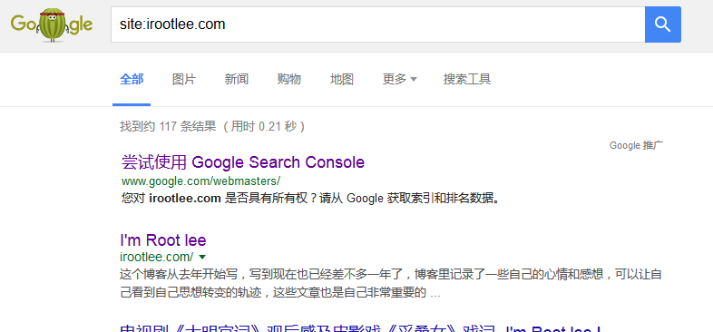
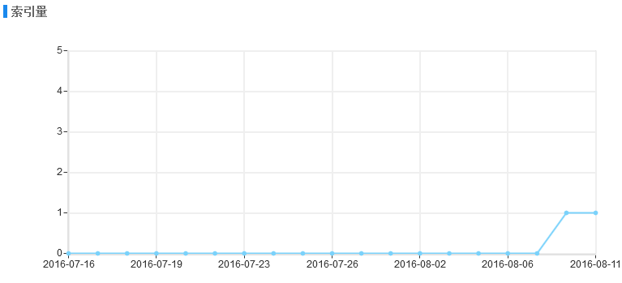

放在Github上的博客更换域名记
这个博客从去年开始写，写到现在也已经差不多一年了，博客里记录了一些自己的心情和感想，可以让自己看到自己思想转变的轨迹，这些文章也是自己非常重要的精神财富。除了读后感和随笔外，博客还记录了一些自己在日常学习中遇到的问题和解决办法，本来是为了便于自己以后遇到类似问题可以有点参考，但从网站的google数据分析来看，博客每天的展示量都有好几百，个别文章获得了很好的关键词排名，吸引了大量人访问，如果我的文章或多或少可以帮助他们解决他们遇到的问题的话，我会感到非常欣慰。
博客原来的域名是http://RootLee.Eu ，域名是在全球老牌域名注册商godaddy注册的，当时没选国内的是因为国内严格的监管和对域名转入转出的限制，注册域名时偶然发现.eu域名只要1.99美元，感觉捡了大便宜，心想首年这么便宜，续费的话应该也不会太贵吧，于是立刻就买下了这个域名。
前两天突然想到域名还有两三个月就要到期了，应该提前去续费了，但当我登录godaddy点击域名续费时，惊奇的发现，续费一年竟然要100美元/年，大约600多人民币！这对还在读书的我实在是一笔巨资了，根本无法承受。唯一的办法就是换域名了，换成全球普遍使用的.com域名，但是，我原来的域名已经使用了快一年，谷歌收录页面达到一百多条，360搜索也有七八十条，百度虽然少一点，但是收录量也是在稳步上升，正处于收录的关键时期，域名更换了就会导致这所有的努力都会付诸东流。心里一直后悔当时不该贪图小便宜，让自己陷入这个两难的境地，真的是“出来混，迟早要还的。”，现在的我就在“还”债。
无论如何域名是要更换的，这次就老老实实在中国的域名商万网里面注册了自己网站新的域名：http://iRootLee.com ，为了防止以后再出现续费奇高的情况，这次直接注册了五年，五年后的我应该已经工作了，即使域名续费需要更高的费用，应该也能付的起了。
只是不知道五年后的我是不是还在继续坚持着写我的博客？域名还需不需要继续续费？
去网上搜索解决办法，发现301页面永久跳转可以传递权重，也就是更换域名后搜索引擎可以将旧域名的权重传递到新域名下，这样的话换域名对网站收录的影响就会小很多。
但是，如何实现301跳转呢？
网上的方法不外乎这几类：
- IIS服务器中实现301跳转
- ASP下的301转向
- PHP下的301转向
- ASP.Net下的301转向
- CGI Perl下的301转向
- JSP下的301转向代码
- Apache下301转向（建立.htaccess文件）
- Apache下vhosts.conf中配置301跳转
- Ruby中实现301跳转
- Coldfusion中实现301跳转
但是这几种方法对我而言都是不可能实现的，首先，我是用Github的gitpages服务搭建的博客，根本没有对服务器的操纵权，所有需要修改服务器配置的方法我都不可能做到；其次，博客是用Hexo生成的静态页面，不是动态网站，所以那些动态语言的方法也不适用。
如果所有方法都不行，还有一个很笨的方法，那就是把自己网站里的每一个html页面加上301跳转语句，当然，这样也可以解决问题，但是，手动做这些不知道弄到什么时候呢。
偶然间在一片文章里看到说有的DNS服务商提供URL转发服务，这种服务就是使用的301跳转实现的，于是，我立刻去自己的DNS服务商DNSPod里查看，发现果然有一个显性URL转发选项，赶紧设置转发到我的域名，但系统提示需要验证手机号码，验证完了手机号之后继续设置转发，系统提示域名正常工作30天后才可以设置转发，但我的域名明明早就工作超过30天了，于是我在dnspod提交工单向工作人员反馈这个问题，过了两小时工作人员回复已解决。再次设置转发，系统再次提示，域名转发要经过24小时审核，审核通过才能生效。好吧，那就等24小时吧，第二天下午，DNSPod给我发邮件，我以为是审核通过的通知邮件，点开之后才失望的发现是审核失败，对照审核失败原因，发现最可能的原因是我的新域名因为没绑定博客，所以新域名是访问不了的，无奈，只好把旧域名解除绑定，然后把新域名添加绑定，再次提交转发申请，幸好，第二天审核通过了，自己用工具测试了一下，访问旧域名就会301跳转到新域名。
做完这些之后去百度站长平台、360站长平台提交网站改版请求，把更换域名规则提交上去，google分析因为墙的原因暂时无法访问，有机会再更改吧，至于对搜索引擎收录的影响，现在还在观察中。
############################################################
2016年8月14日更新
换域名将近一个月了，以下是更换效果：
google搜索不愧是世界上最好的搜索引擎，域名更换并做了301跳转之后，很快就在搜索结果里看到了新网址http://irootlee.com 的网站索引，经过十来天新网址的索引量已经轻松恢复到原来的水平了，截止到今天为止，google索引了117条结果，效果奇佳。
google索引量：

360搜索
360搜索对站长非常友好，虽然网站改版规则里规定只有网站流量达到一定量的网站才能添加改版记录，但是我添加改域名规则后，360依然通过了审核，所以360搜索的索引量提升也很快。
360搜索索引量：
百度搜索
百度搜索因为前一阵域名莫名奇妙的抓取失败，导致了索引量上升比较缓慢，也是因为百度索引网页时比较谨慎，所以目前为止只索引了一篇文章，但可以预见，随着时间推移，百度索引也会恢复正常的。
百度索引：

搜狗
呃，收录有点慢…